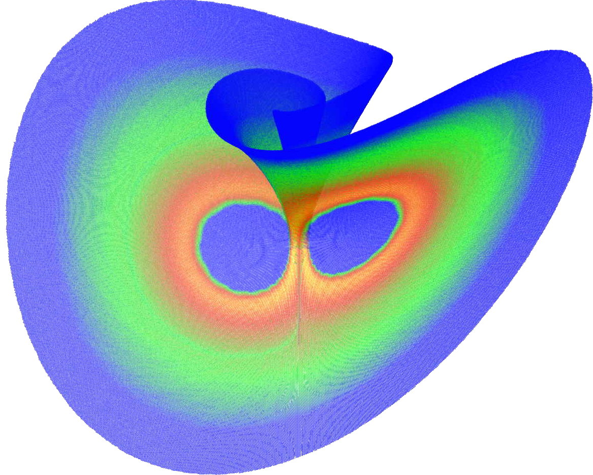
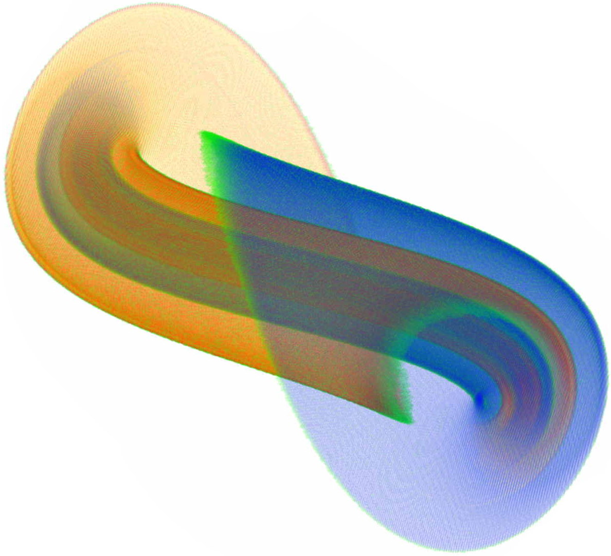

GAIO
Global Analysis
of Invariant Objects
GAIO is a Matlab toolbox for set oriented numerics.
 
Download (v3.0)
Demos
References
- M. Dellnitz, O. Junge. Set Oriented Numerical Methods for Dynamical Systems. In: B. Fiedler (ed.): Handbook of Dynamical Systems 2, Elsevier, pp. 221-264, 2002.
- M. Dellnitz, G. Froyland, O. Junge. The algorithms behind GAIO -- Set oriented numerical methods for dynamical systems. In: B. Fiedler (ed.): Ergodic Theory, Analysis, and Efficient Simulation of Dynamical Systems, pp. 145-174, Springer, 2001.
Copyright
(C) 2003-2014 by djs$^2$ GbR, Paderborn